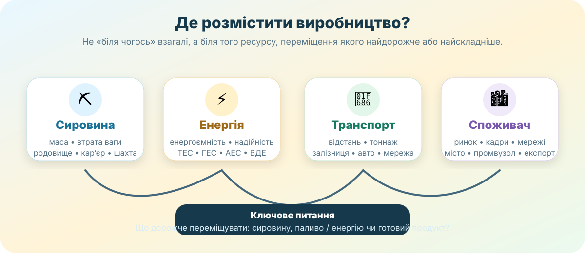

Чому алюмінієвий завод, шахта, ТЕС і дата-центр «люблять» зовсім різні місця? Сьогодні Ви не вчитимете визначення окремо від реальності: спочатку спробуєте розмістити виробництво, потім перевірите рішення картою Західного Донбасу й енергетикою Запорізької області.
Компанія обирає місце для нового підприємства. На 1 т готового продукту потрібно 2,4 т сировини, а електроенергії — 350 кВт·год. Сировина є лише в одному районі, електромережа — всюди, але її надійність різна. Де будувати завод: біля родовища, біля електростанції чи біля великого міста?
Пастка уроку: «підприємства будують біля ресурсів» — надто грубе правило. Потрібно з’ясувати, який саме ресурс створює найбільші витрати або ризик.
1. Побудуйте рішення, а не вгадайте — 7 хв

Сировинний чинник сильний, коли сировина важка, об’ємна, швидко псується або під час переробки значна її частина стає відходами. Паливно-енергетичний — коли процес потребує дуже багато енергії або стабільного енергопостачання.
Модель умовна: вона порівнює два типи просторового «тиску», а не рахує реальну собівартість.
Експеримент А. Зменште сировину до 1,05 т на 1 т продукції. Що змінюється?
Експеримент Б. Збільште енергоємність до 15 000 кВт·год. Який чинник починає домінувати?
Експеримент В. Підніміть ризик перебоїв до 20%. Чому для деяких виробництв це важливіше за середню ціну електроенергії?
2. Дослідження з КТП: шахти Західного Донбасу — 7 хв
Шахтний комплекс Павлоградського району. Фото DTEK. Тут сировинний чинник абсолютний: шахту фізично неможливо «перенести» від пласта вугілля.
Крок 1. На карті знайдіть Павлоград, Тернівку, с. Вербки та район на схід від Павлограда. Це ядро Західного Донбасу.
Крок 2. За офіційним переліком DTEK випишіть щонайменше 4 шахти. Підказка: ім. Героїв Космосу, Павлоградська, Західно-Донбаська, Тернівська, Самарська, Дніпровська.
Крок 3. Побудуйте ланцюг: пласт вугілля → шахта → збагачення / транспорт → ТЕС → електроенергія. На якому етапі чинник уже не сировинний, а паливно-енергетичний?
Перевірка джерел. Шахтоуправління ім. Героїв Космосу включає шахти ім. Героїв Космосу та Павлоградську; Тернівське — Західно-Донбаську й Тернівську; Дніпровське — Самарську й Дніпровську. Усі вони видобувають вугілля для теплової генерації.
3. Енергетика Запорізької області: один регіон — різні чинники — 6 хв
Об’єкт
Джерело енергії
Чому саме тут?
Дніпровська ГЕС
енергія потоку й перепаду води
Дніпро, гідротехнічний вузол, мережі та великий промисловий споживач
Запорізька АЕС
ядерне паливо
потребує потужної системи охолодження, електромереж і великих земельних та інфраструктурних ресурсів
Запорізька ТЕС
теплова генерація; історично вугілля та резервні види палива
паливо можна транспортувати, але станція тяжіє до енергетичного вузла, води та мереж
Ботієвська ВЕС
вітер
узбережний вітровий ресурс; встановлена потужність 200 МВт
Контекст без маскування реальності. Частина великих енергетичних об’єктів Запорізької області перебуває на тимчасово окупованій території або зазнала воєнних пошкоджень. На уроці ми аналізуємо їх географічне розміщення і тип енергоресурсу, а не припускаємо, що всі вони зараз працюють у довоєнному режимі.
4. Групове завдання з КТП: скільки сонячних панелей потрібно? — 4 хв
Сценарій. Шкільний корпус споживає 48 000 кВт·год електроенергії на рік. Ви проєктуєте СЕС, яка повинна за рік виробляти еквівалент 60% цього споживання. Для спрощеної моделі приймемо річний виробіток 1 150 кВт·год з кожного встановленого кВт. Це навчальне припущення: реальний виробіток залежить від місця, орієнтації, затінення, втрат і погоди.
Порахуйте необхідну встановлену потужність і приблизну кількість панелей.
5. Короткий відеофрагмент — 3 хв
Відео МОН про використання природно-ресурсного потенціалу. Дивіться фрагмент і ловіть не перелік ресурсів, а логіку: ресурс впливає на господарське рішення лише через технологію, транспорт, попит та інфраструктуру.
6. Теорія після дослідження — 3 хв
Сировинний чинник
Тяжіння виробництва до джерела сировини, особливо коли на одиницю продукту витрачається велика маса сировини, є великі відходи або сировина погано переносить перевезення.
Паливно-енергетичний чинник
Тяжіння енергоємного виробництва до надійного й достатнього джерела енергії або палива. Для електроенергії важлива не тільки близькість станції, а й пропускна здатність та стійкість мереж.
Чинники працюють разом
Реальний завод рідко має одну причину розміщення. У рішення входять також вода, транспорт, трудові ресурси, споживач, екологічні обмеження, безпека та вартість землі.
Головна ідея: географічний чинник — не «точка на карті», а механізм витрат і переваг, який робить одне місце вигіднішим або надійнішим за інше.
7. CER — доведіть висновок — 3 хв
Твердження для перевірки: «У сучасній економіці паливно-енергетичний чинник повністю витіснив сировинний».
8. Домашнє завдання
1. Електронний підручник. Опрацюйте §50 «Як сировинний і паливно-енергетичний чинники впливають на розміщення виробництва».
2. Базовий рівень. Складіть таблицю з 4 виробництв: «головний чинник — доказ — що зміниться, якщо транспорт стане удвічі дешевшим?»
3. Дослідницький рівень. Оберіть підприємство Запорізької області або Західного Донбасу й поясніть його розміщення мінімум трьома чинниками. Додайте посилання на джерело або карту.